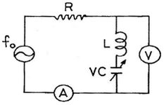
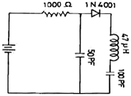
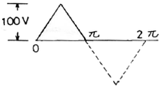
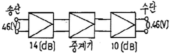
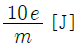
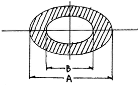
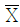

통신설비기능장 (2006-07-16 기출문제)
1과목: 임의 과목 구분(20문항)
1. OSI에서 규정하는 데이터 통신 모델은 몇 계층으로 나누어져 있는가?
- 5계층
- 7계층
- 8계층
- 10계층
(정답률: 98%)

2. 공진회로의 VC를 가변하면서 fo에 공진시키고자 한다. 공진시 전압계와 전류계의 지시치는 어떠한가?

- V : 최대, A : 최대
- V : 최대, A : 최소
- V : 최소, A : 최대
- V : 최소, A : 최소
(정답률: 78%)
3. 다음 동선케이블 중 무유도성으로서 비밀보안에 가장 적합한 것은?
- 평형 케이블
- 장하 케이블
- 동축 케이블
- 광섬유 케이블
(정답률: 88%)
4. 디지털 회선교환기의 가입자선 정합장치의 기능이 아닌 것은?
- 경보처리(alarm processing)
- 직류전류 감시(supervision)
- 가입자회선 시험(test)
- 통화전류 공급(battery feed)
(정답률: 88%)
5. 다음 설명 중 잘못된 것은?
- 아날로그변조에 의해서 바뀌게 되는 신호의 요소는 진폭, 주파수 및 위상이다.
- AM에서는 양자화 에러(Quantization error)가 발생한다.
- 주파수분할 다중방식은 각 채널 별로 주파수를 나누어 전송한다.
- FM은 아날로그 변조이다.
(정답률: 75%)
6. 휘트스톤 브리지(wheatstone bridge)의 원리를 이용하여 루프(loop)저항의 측정, 혼선저항의 위치 측정 및 단선 고장의 위치 측정 등을 할 수 있는 측정기의 이름은?
- L3 시험기
- BW(Break Down) 시험기
- Pulse 시험기
- 감쇠량 시험기
(정답률: 84%)
7. 그림의 회로에서 각 부품의 양단전압을 체크 했을 때 가장 높은 전압이 나타나는 것은?

- 1000[Ω]
- 100[pF]
- 50[pF]
- 47[μH]
(정답률: 58%)
8. 전압반사계수가 Γυ = -(1/3)인 급전선에서의 전압정재파비(VSWR)는?
- 1/4
- 1/3
- 1
- 2
(정답률: 39%)
9. LAN에서 사용하는 다중 액세스 방식 중 CSMA/CD 방식의 특징은?
- 각 노드의 액세스 시간은 무한정 보장된다.
- 최대 거리 제한이 없다.
- 높은 부하에 대해 충돌 없이 안정하게 동작한다.
- 모든 노드는 대등한 액세스 권리를 갖는다.
(정답률: 60%)
10. DSB 통신과 비교하여 SSB 통신의 특징이 아닌것은?
- 페이딩의 영향이 적다.
- 점유대역폭이 1/2이다.
- 반송파가 출력에 나타나지 않는다.
- 수신 장치가 간단해진다.
(정답률: 82%)
11. 어떤 선로의 단위 길이당 저항이 400[Ω]이고 누설 컨덕턴스가 10-4 [℧]이라면, 이 선로의 손실을 가장 적게 하려면 특성 임피던스는 몇 [kΩ]인가?
- 1
- 2
- 40
- 400
(정답률: 42%)
12. 다음 중 디지털 신호를 주파수로 대응하는 디지털 변조방식은?
- FM
- QAM
- PCM
- FSK
(정답률: 50%)
13. 우리나라의 전기통신에 관한 사항은 누가 관장하는가?
- 대통령
- 국무총리
- 방송통신위원회
- 한국통신사장
(정답률: 48%)
14. 무선전화 회선에 있어서 비화장치의 사용목적은?
- 명음(singing) 현상을 방지하기 위하여
- 누화현상을 방지하기 위하여
- 도청을 방지하기 위하여
- 음질을 좋게 하기 위하여
(정답률: 81%)
15. 다음 중 전자교환기의 수명보전과 오동작을 방지하기 위한 교환실의 적정온도는?
- 최저 5[℃]에서 최고 15[℃] 이내
- 최저 15[℃]에서 최고 28[℃] 이내
- 최저 10[℃]에서 최고 20[℃] 이내
- 최저 25[℃]에서 최고 35[℃] 이내
(정답률: 81%)
16. 디지털 신호의 "1"이나 "0"을 gate 내에 기억시켜 놓을 수 있는 것(메모리용 소자)은?
- 인버터
- 플립플롭
- 디코더
- 멀티플렉서
(정답률: 65%)
17. 접지 설치의 목적이 아닌 것은?
- 정전기로부터 시스템을 보호
- 각종 전자 기기로부터의 간섭을 감소
- 과도 전압과 전류로부터 시스템을 보호
- 고주파 전류의 평형 및 안정을 위한 부도체 역할
(정답률: 58%)
18. 가입자 전화기에 과전류 보호기를 설치하는 이유로 가장 타당한 것은?
- 낙뢰 또는 잠입되어 들어오는 전류로부터 전화기를 보호하기 위하여
- 전화기 자체에 대한 부식을 방지하기 위하여
- 전화기의 품질을 향상하기 위하여
- 가입자 실내 전화선을 보호하기 위하여
(정답률: 85%)
19. 광섬유의 원리로서 매질Ⅰ에서 매질Ⅱ로 광이 입사될 때 굴절현상이 생기지 않고 완전히 반사되는 현상을 무엇이라고 하는가?
- 무굴절 현상
- 전반사 현상
- 임계 현상
- 무반사 현상
(정답률: 74%)
20. 광케이블 심선 접속장비가 아닌 것은?
- 케이블 작키
- 광섬유 절단기
- 광섬유 외피 탈피기
- 광섬유 융착 접속기
(정답률: 85%)
2과목: 임의 과목 구분(20문항)
21. FM 수신기에서 스켈치(squelch) 회로의 사용 목적으로 가장 타당한 것은?
- 안테나로부터의 불필요한 복사를 방지한다.
- 검파출력의 잡음이 클 때 가청주파 증폭단을 차단한다.
- 국부발진주파수의 변동을 방지한다.
- 페이딩에 의한 수신레벨을 자동 조절한다.
(정답률: 61%)
22. 저궤도 통신위성(LEO)에 대한 설명 중 옳지 않은 것은?
- 지구관측, 기상관측, 지구자원탐사 등에 이용된다.
- 복수개의 궤도에 복수개의 정지위성을 이용한 통신서비스를 제공한다.
- Iridium Global star project가 있다.
- 음성 및 비음성 서비스를 전세계로 제공할 수 있다.
(정답률: 47%)
23. 전화선과 전용단말기를 이용하여 뉴스, 일기, 스포츠, 주식시세, 의료 정보 등 필요한 정보를 받아보고 그 대가를 지불하는 서비스를 할 수 있는 것은?
- 비디오텍스(videotex)
- 텔레텍스트(teletext)
- 원격터미날(remote terminal)
- 화상회의(teleconference)
(정답률: 59%)
24. 전리층에 수직으로 입사한 전파는 어떤 주파수보다 낮으면 거의 수직 방향으로 반사되고, 그 주파수보다 높으면 투과 되는 것은?
- 최고 사용 주파수
- 임계 주파수
- 최저 사용 주파수
- 최적 운용 주파수
(정답률: 80%)
25. 다음 그림의 정3각파 전압에 대한 설명으로 맞는 것은?

- 최대치는 200[V]이다.
- 최소치는 100[V]이다.
- 실효치는 57.7[V]이다.
- 평균치는 45[V]이다.
(정답률: 63%)
26. 다음 장비 중 인터네트워킹 장비가 아닌 것은?
- 게이트웨이
- 라우터
- 셀룰러
- 브리지
(정답률: 62%)
27. 이동 통신 시스템에서 무선 교환국과 이동 단말장치를 연결해주는 기능을 하는 곳은?
- 교환국
- 기지국
- 중계국
- 단말 장치
(정답률: 75%)
28. 광섬유의 재료 흡수손실 중 가장 큰 요인은?
- Fe
- Co
- Mn
- OH-
(정답률: 61%)
29. 통신속도가 200[baud]이고, 보[baud]당 신호 레벨이 4일 때 1분간의 송신 가능 속도를 계산하면 얼마인가?
- 4,500[bps]
- 24,000[bps]
- 36,000[bps]
- 48,000[bps]
(정답률: 20%)
30. 다음 중 마이크로파 송신기의 전력측정에 가장 적합한 것은?
- Q 미터
- 그리드 딥 미터(Grid dip meter)
- 오실로스코프
- 볼로미터(Bolometer)
(정답률: 55%)
31. 데이터 전송 시스템에 있어서 전송 방향에 따른 분류가 아닌 것은?
- 단향 통신방식
- 기간 통신방식
- 반이중 통신방식
- 전이중 통신방식
(정답률: 80%)
32. 다음 중 차량이동 무선전화용으로 가장 많이 이용되는 안테나는?
- 다이폴(Dipole) 안테나
- 야기(Yagi) 안테나
- 휩(Whip) 안테나
- 빔(Beam) 안테나
(정답률: 52%)
33. 중계회로에서 송단전압 46[V], 수단전압 0.46[V], 송단감쇠량 14[dB], 수단감쇠량10[dB]일 때 중계기의 감쇠량은? (단, 회로의 임피던스는 모두 600[Ω]으로 동일하다.)

- 6[dB]
- 10[dB]
- 16[dB]
- 20[dB]
(정답률: 50%)
34. 이동통신에서 이동체의 빠른 이동 때문에 수신점의 전계강도가 시간적으로 변동하는 현상은 무엇인가?
- 페이딩 현상
- 자기량 현상
- 채널간섭 현상
- 지연확산 현상
(정답률: 75%)
35. 리미터(Limiter) 작용을 강한 주파수 변별기는?
- 경사형 검파
- 스태거 동조형 검파
- 포스터 실리형 검파
- 비 검파
(정답률: 33%)
36. 전주 운반시 준수하여야 하는 사항으로 부적합한 것은?
- 운반작업조를 편성하고 조장을 지정한다.
- 작업자는 안전모를 착용한다.
- 조장은 조원의 연령, 체력, 신장 등을 고려치 않고 개인별 능력대로 배치한다.
- 작업은 조장의 구령 또는 신호에 따라 실시한다.
(정답률: 85%)
37. 오실로스코프에서 톱니파를 측정하고자 하는 파에 동기를 시키는 이유는?
- 전압을 알기 위하여
- 파형을 정지시키기 위하여
- 파형을 확대하기 위하여
- 주파수를 알기 위하여
(정답률: 67%)
38. 트래픽에 대한 설명 중 적합하지 않은 것은?
- 호가 발생하여 통화가 끝날 때까지의 시간을 보류 시간(holding time)이라 한다.
- 하루 중 가장 많은 호가 발생하는 1시간을 최번시(busy hour)이라 한다.
- 트래픽의 단위는 어량과 100초호(HCS)가 사용된다.
- 1 어랑의 트래픽양은 1개의 전송 회선이 1일 동안 최대로 운반할 수 있는 트래픽을 나타낸다.
(정답률: 70%)
39. 다음 중 정보통신 시스템의 구성요소 중 데이터 처리계에 해당하는 것은?
- 모뎀
- 중앙처리장치
- 신호변환장치
- 통신회선
(정답률: 75%)
40. 10[V]의 전위차로 가속된 전자가 얻는 에너지는? (단, m: 전자의 질량, e: 전자의 전하량)
- 10em[J]
- 10[eV]

- 10m[eV]
(정답률: 44%)
3과목: 임의 과목 구분(20문항)
41. 송신기에서 발생된 정보의 정확한 전송을 위하여 전송할 데이터의 앞부분과 뒷부분에 헤더와 트레일러를 첨가하는 과정은?
- 정보의 분할
- 정보의 검출
- 정보의 캡슐화
- 정보의 전송
(정답률: 75%)
42. 다음 중 시분할 다중방식에서 신호파의 최고 주파수를 4[kHz]라 하면 표본화 주파수는?
- 2[kHz]
- 4[kHz]
- 6[kHz]
- 8[kHz]
(정답률: 58%)
43. Multiple Access 방식 중 대역확산(Spread Spectrum)방식과 가장 관계 깊은 것은?
- Frequency division MA
- Time division MA
- Code division MA
- Space division MA
(정답률: 50%)
44. ATM 통신기술에서 셀의 헤더와 사용자 정보의 크기는?
- 헤더 5[byte], 사용자 정보 38[byte]
- 헤더 5[byte], 사용자 정보 48[byte]
- 헤더 5[byte], 사용자 정보 68[byte]
- 헤더 10[byte], 사용자 정보 128[byte]
(정답률: 80%)
45. 수신기의 내부 잡음이 없는 이상적인 수신기의 잡음 지수는?
- 100
- 0
- 10
- 1
(정답률: 55%)
46. 다음 중 데이터 교환방식의 종류가 아닌 것은?
- 회선 교환방식
- 패킷 교환방식
- 전용 교환방식
- 메시지 교환방식
(정답률: 37%)
47. 광섬유에 입사 광전력이 1[mW], 출사 광전력이 0.1[mW]였다면 절단법에 의한 손실은 몇 [dB]인가?
- 5
- -10
- 0.1
- 1
(정답률: 63%)
48. 정지화상이나 동영상 등의 정보를 통신 시스템을 통하여 전송하고 입력과 출력을 할 수 있도록 해주는 단말장치는?
- 화상 단말 장치
- 제어용 단말 장치
- 프린터 단말 장치
- 음성 단말 장치
(정답률: 63%)
49. ISDN에서 사용되는 채널이 아닌 것은?
- B 채널
- D 채널
- H 채널
- F 채널
(정답률: 41%)
50. 데이터 단말 장치에 사용되는 전송 제어 문자 중 문자 동기 유지를 위한 문자는?
- SOH
- ENQ
- ACK
- SYN
(정답률: 66%)
51. 오실로스코프에 그림과 같은 리사주도형이 나타났다. 이때의 변조도는 얼마인가?(단, A = 2B이다.)

- 80.7[%]
- 56.4[%]
- 33.3[%]
- 24.2[%]
(정답률: 50%)
52. 다음 중 FDM 다중화 신호계위가 순서대로 맞는 것은?(단, BG: 기초군, SG: 기초초군, MG: 기초주군, JG: 기초거군)
- JG - BG - MG - SG
- BG - SG - MG - JG
- SG - JG - BG - MG
- MG - BG - JG - SG
(정답률: 77%)
53. 포물면경의 초점에서 나온 빛은 포물면경에서 반사된 후, 포물면경의 축에 평행하게 진행하는 광선으로 된다는 광학의 원리를 이용한 안테나는?
- 파라볼라 안테나
- 마이크로스트림 안테나
- 슈퍼 게인 안테나
- 롬빅 안테나
(정답률: 39%)
54. 마이크로파대에서 주로 사용되는 급전선은?
- 도파관
- 단선
- 평형 2선
- 평형 4선
(정답률: 77%)
55. 어떤 측정법으로 동일 시료를 무한 횟수로 측정하였을 때 데이터 분포의 평균치와 참값과의 차를 무엇이라 하는가?
- 신뢰성
- 정확성
- 정밀도
- 오차
(정답률: 52%)
56. PERT에서 Network에 관한 설명 중 틀린 것은?
- 가장 긴 작업시간이 예상되는 공정을 주공정이라 한다.
- 명목상의 활동(Dummy)은 점선 화살표(→)로 표시한다.
- 활동(Activity)은 하나의 생산작업 요소로서 원(○)으로 표시된다.
- Network는 일반적으로 활동과 단계의 상호관계로 구성된다.
(정답률: 52%)
57. 공정분석 기호 중 □는 무엇을 의미하는가?
- 검사
- 가공
- 정체
- 저장
(정답률: 49%)
58. 축의 완성지름, 철사의 인장강도, 아스피린 순도와 같은 데이터를 관리하는 가장 대표적인 관리도는?

-R 관리도- nP 관리도
- c 관리도
- u 관리도
(정답률: 57%)
59. 생산계획량을 완성하는데 필요한 인원이나 기계의 부하를 결정하여 이를 현재인원 및 기계의 능력과 비교하여 조정하는 것은?
- 일정계획
- 절차계획
- 공수계획
- 진도관리
(정답률: 79%)
60. TPM 활동의 기본을 이루는 3정 5S 활동에서 3정에 해당 되는 것은?
- 정시간
- 정돈
- 정리
- 정량
(정답률: 46%)